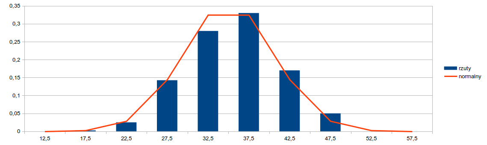

Laboratorium nr 2. Odpowiedzi
Odpowiedź do zadania 2.b
empiryczny rozkład prawdopodobieństwa

Odpowiedź do zadania D.2
kombinatoryka dla 1-10 kostek

Odpowiedź do zadania D.5
porównanie z rozkładem teoretycznym

Odpowiedź do zadania 3
miary rozkładu z próby losowej

Odpowiedź 4.a
porównanie z rozkładem normalnym N(70/2 , 5*sqrt(7/6))

Odpowiedź 4.c
Wykres typu P-P

Odpowiedź 4.d
standaryzacja rozkładu normalnego
szereg rozdzielczy dla zmiennej losowej Z

pomocniczo wykres rozkładu prawdopodobieństwa

pomocniczo histogram dla zmiennej losowej Z